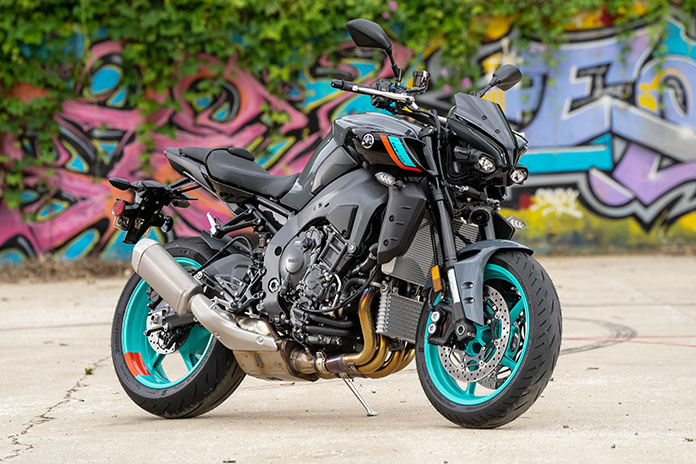

MT10
La nueva Yamaha MT10 entrega una potencia máxima de 165 CV a 11.500 rpm y un par motor máximo de 112 Nm a 9.000 rpm. Su nivel de aceleración desde bajos o el nivel de potencia en altas rpm ofrece una excelente velocidad máxima solo limitada por su protección aerodinámica.
Cotiza más >>